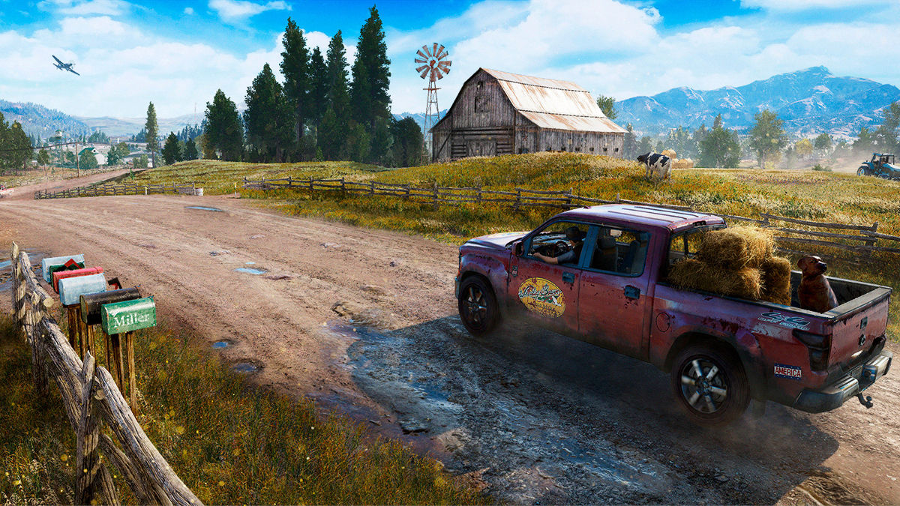
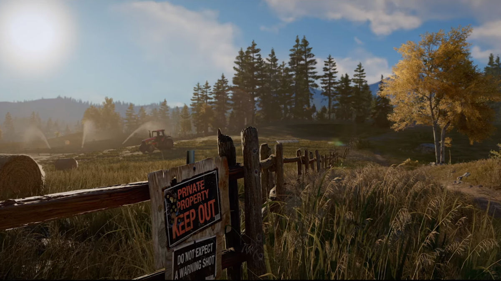
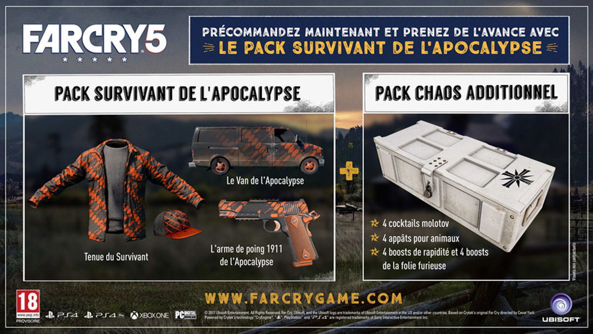

L'inform

Far Cry 5 - Xbox One + DLC Offert !
Réf UBISOFT : 3307216022886
Optimisé pour Xbox One X Pack Survivant de l'Apocalypse
Réf UBISOFT : 3307216022886
Optimisé pour Xbox One X Pack Survivant de l'Apocalypse


Descriptif produit
Far Cry 5 - Xbox One
UBISOFT
Bienvenue à Hope County, dans le Montana. Terre de liberté et de bravoure qui abrite un culte de fanatiques survivalistes : Le Projet Eden’s Gate. Jospeh Seed, prophète charismatique et sa famille, les « Messagers ». Eden’s Gate a petit à petit étendu son emprise sur tout Hope County et ses habitants, une ville autrefois calme et sans histoire. Votre arrivée pousse ces fanatiques à prendre le contrôle de la région par la force. Vous allez devoir combattre et mener la résistance afin de libérer les habitants pris au piège de ce culte.
Explorez librement les rivières, les terres et les cieux d’Hope County, avec le plus grand choix d’armes et de véhicules à personnaliser jamais vu à ce jour dans un Far Cry. Soyez le héros d’une toute nouvelle aventure prenant place dans un monde trépidant où chaque coup vous sera rendu. Les lieux que vous découvrirez et les habitants que vous rallierez à votre cause façonneront votre expérience pour un scénario plein de surprises.

Menez la résistance et luttez contre un culte mystérieux
En plein territoire hostile, puisez votre force dans la communauté locale pour mener la résistance contre les fidèles du culte cherchant à prendre le contrôle d’Hope County. Rencontrez des personnages mémorables comme Mary May, la propriétaire d’un bar local ; Nick Rye, un père de famille adepte d’aviation et le Pasteur Jérôme qui a vu sa paroisse s’écarter du droit chemin. Recrutez des mercenaires parmi les nombreux personnages disponibles. Mettez à profit les compétences de trois alliés à la fois pour mener à bien la résistance face au Projet d’Eden’s Gate. Donnez des ordres à des animaux de guerre spécialisés en fonction de votre style de jeu. Jouez en coopération avec un ami et combattez le culte à deux durant l’intégralité de la campagne.
Créer votre propre histoire
Vous avez la liberté d’aller où vous voulez : à vous de décider où, quand et comment. Dès vos premiers pas dans Hope County, vous pourrez choisir dans quel ordre explorez le monde. Pour la toute première fois dans Far Cry, vous choisissez votre héros : créez votre propre avatar et personnalisez votre personnage. Avec l’éditeur de niveaux, vous pouvez jouer à plusieurs, avec ou contre vos amis. Ce nouveau mode de jeu rendra votre expérience unique et terriblement fun.
Un mode en constante évolution
Jouez comme bon vous semble dans un monde ouvert dynamique qui s’adapte et réagit à vos choix. Faites grimper la jauge de la résistance pour faire évoluer votre environnement et votre histoire. Perturbez les préparatifs du culte pour la fin du monde afin d’attirer ses membres dans des confrontations épiques. Vos choix influent sur le déroulement du jeu en débloquant de nouvelles opportunités de gameplay au milieu du chaos.
Des jouets dynamiques
Explorez le monde de Far Cry 5 à bord de véhicules américains emblématiques tels que des Muscle Cars, des semi-remorques, des quads ou encore des tracteurs. Pilotez des avions et prenez l’avantage face au culte dans des combats aériens épiques ou en bombardant leurs positions. Découvrez les richesses naturelles du Montana en chassant, pêchant et explorant les environs.
UBISOFT

Bienvenue à Hope County, dans le Montana. Terre de liberté et de bravoure qui abrite un culte de fanatiques survivalistes : Le Projet Eden’s Gate. Jospeh Seed, prophète charismatique et sa famille, les « Messagers ». Eden’s Gate a petit à petit étendu son emprise sur tout Hope County et ses habitants, une ville autrefois calme et sans histoire. Votre arrivée pousse ces fanatiques à prendre le contrôle de la région par la force. Vous allez devoir combattre et mener la résistance afin de libérer les habitants pris au piège de ce culte.
Explorez librement les rivières, les terres et les cieux d’Hope County, avec le plus grand choix d’armes et de véhicules à personnaliser jamais vu à ce jour dans un Far Cry. Soyez le héros d’une toute nouvelle aventure prenant place dans un monde trépidant où chaque coup vous sera rendu. Les lieux que vous découvrirez et les habitants que vous rallierez à votre cause façonneront votre expérience pour un scénario plein de surprises.
Menez la résistance et luttez contre un culte mystérieux
En plein territoire hostile, puisez votre force dans la communauté locale pour mener la résistance contre les fidèles du culte cherchant à prendre le contrôle d’Hope County. Rencontrez des personnages mémorables comme Mary May, la propriétaire d’un bar local ; Nick Rye, un père de famille adepte d’aviation et le Pasteur Jérôme qui a vu sa paroisse s’écarter du droit chemin. Recrutez des mercenaires parmi les nombreux personnages disponibles. Mettez à profit les compétences de trois alliés à la fois pour mener à bien la résistance face au Projet d’Eden’s Gate. Donnez des ordres à des animaux de guerre spécialisés en fonction de votre style de jeu. Jouez en coopération avec un ami et combattez le culte à deux durant l’intégralité de la campagne.
Créer votre propre histoire
Vous avez la liberté d’aller où vous voulez : à vous de décider où, quand et comment. Dès vos premiers pas dans Hope County, vous pourrez choisir dans quel ordre explorez le monde. Pour la toute première fois dans Far Cry, vous choisissez votre héros : créez votre propre avatar et personnalisez votre personnage. Avec l’éditeur de niveaux, vous pouvez jouer à plusieurs, avec ou contre vos amis. Ce nouveau mode de jeu rendra votre expérience unique et terriblement fun.
Un mode en constante évolution
Jouez comme bon vous semble dans un monde ouvert dynamique qui s’adapte et réagit à vos choix. Faites grimper la jauge de la résistance pour faire évoluer votre environnement et votre histoire. Perturbez les préparatifs du culte pour la fin du monde afin d’attirer ses membres dans des confrontations épiques. Vos choix influent sur le déroulement du jeu en débloquant de nouvelles opportunités de gameplay au milieu du chaos.
Des jouets dynamiques
Explorez le monde de Far Cry 5 à bord de véhicules américains emblématiques tels que des Muscle Cars, des semi-remorques, des quads ou encore des tracteurs. Pilotez des avions et prenez l’avantage face au culte dans des combats aériens épiques ou en bombardant leurs positions. Découvrez les richesses naturelles du Montana en chassant, pêchant et explorant les environs.